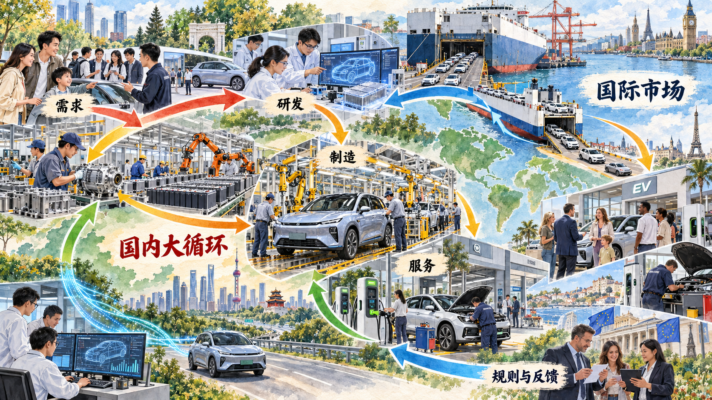
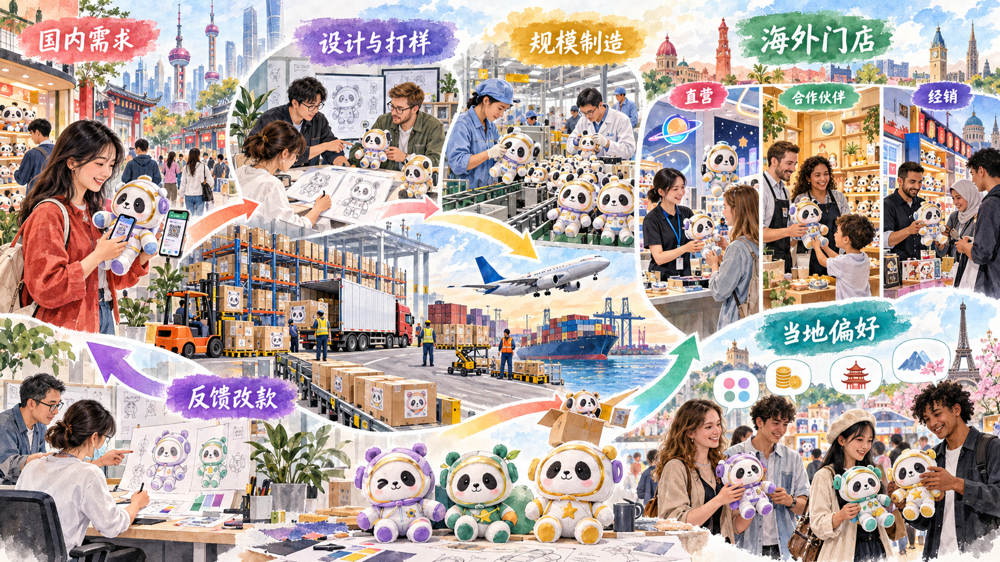

让生产、分配、流通和消费形成更高水平循环
新发展格局不是把国内市场与国际市场分成两块，而是以国内大循环为主体，使国内国际两个循环在资源、技术、市场、规则和需求反馈中相互促进。本节先解释为什么这是一项战略部署，再沿新能源汽车、数码消费和品牌出海观察循环怎样实际发生。
一、把握未来发展主动权的战略部署
经济循环表现为生产、分配、流通和消费相互衔接。生产创造产品和收入，分配影响消费与投资能力，流通把产品和要素送到需要它们的地方，消费又形成新的需求信号。任何环节出现堵点，都会影响整个循环。
构建新发展格局，是根据我国发展阶段、环境和条件变化作出的战略部署。我国拥有超大规模市场、完整产业体系和丰富应用场景，可以通过扩大内需、提高供给质量和疏通循环形成发展主动。同时继续利用国内国际两个市场、两种资源，以高水平开放提高循环质量。
二、以国内大循环为主体、国内国际双循环相互促进
新能源汽车产业能够把两个循环画在一张图里。国内消费需求为企业研发迭代、供应商成长、规模制造、充换电网络和售后服务提供基础；产品、零部件和服务进入国际市场后，又面对新需求、标准、物流、渠道和本地化服务。这些信息返回研发和供应链，推动产品继续调整。
2025 年，我国新能源汽车产量 1662.6 万辆、销量 1649 万辆，新车销量占汽车新车总销量 47.9%；新能源汽车出口 261.5 万辆。国内销量构成产业基本盘，出口把产业同更广阔的市场和规则连接起来。

新闻摘录｜全球每售出四辆新车，就有一辆是电动汽车
国际能源署《全球电动汽车展望 2026》显示，2025 年全球电动汽车销量增长约 20%，超过 2000 万辆，占全球新车销量约四分之一。电动汽车由早期的小众产品逐步进入主要汽车市场，车型数量、充电基础设施和消费者选择都在扩大。
全球电动汽车生产和贸易也在重组。报告显示，2025 年全球生产近 2200 万辆电动汽车，中国是主要制造中心；约四分之一的电动汽车跨国交易。出口把国内生产能力同海外需求连接起来，也使企业需要处理认证标准、贸易规则、售后服务和本地化经营。
国际能源署使用的 “electric cars” 主要统计纯电动和插电式混合动力乘用车，与我国“新能源汽车”统计口径并不完全相同。比较不同市场时，需要先统一统计对象、时间和单位。
讨论题
- 出口数量增长以后，汽车企业还需要在海外建立哪些能力？
- 为什么比较中国新能源汽车与全球电动汽车市场时必须先核对口径？
- 海外消费者的反馈可以通过哪些路径改变国内研发和生产？
资料来源：International Energy Agency, “Trends in electric cars,” Global EV Outlook 2026, 2026，CC BY 4.0。中文翻译与节译。
三、大力推动构建新发展格局
构建新发展格局，要把扩大内需同深化供给侧结构性改革结合起来。需求牵引供给，消费者对续航、安全、智能化和服务的要求推动企业改进产品；供给创造需求，新技术和新产品又会形成新的使用场景。投资则通过设备更新、基础设施和技术改造形成未来生产能力。
案例研究｜最高 500 元手机补贴怎样连接消费和生产
2025 年实施的手机、平板、智能手表（手环）购新补贴规定，个人购买单件销售价格不超过 6000 元的相应数码产品，可以按照最终销售价格的 15% 获得补贴，每件最高不超过 500 元。支付立减降低当期购买成本，交易信息闭环和可追溯要求用于保障资金安全。
一笔消费会沿市场链条继续传递。零售商依据销量调整库存和采购，生产企业据此安排排产，零部件企业获得订单，消费者使用反馈又影响下一轮产品设计。消费由此进入生产、流通和技术迭代过程。
讨论题
- 你会因为 500 元补贴提前换手机吗？哪些条件影响选择？
- 补贴形成的需求怎样传递到芯片、屏幕、电池和软件企业？
资料来源：商务部等 5 部门办公厅《手机、平板、智能手表（手环）购新补贴实施方案》，2025 年 1 月 13 日。
案例研究｜从“十元店”到全球 IP 零售：名创优品怎样连接两个市场
名创优品门店中的文具、生活用品、潮玩和联名商品，是很多大学生熟悉的消费场景。这个案例的关键问题，不是门店开了多少家，而是一件商品怎样从消费者偏好进入设计、授权、打样、制造、物流和门店，又怎样在海外市场获得反馈。
国内市场提供产品试验和规模采购条件。企业通过门店数据观察颜色、功能、价格和 IP 偏好，设计团队与供应商共同打样，产品经过质量控制和门店试销后进入规模生产。制造能力通过选品、设计、知识产权合作和品牌运营转化为消费者可以识别的商品体验。
截至 2025 年末，名创优品品牌全球门店 8151 家，其中中国内地 4568 家、海外 3583 家。海外门店包括直营 700 家、合作伙伴经营 432 家、经销模式 2451 家。三种方式对应不同的投资、库存、运营控制和本地合作关系，说明品牌进入国际市场不仅是把商品运出去，还要建立组织网络。
雅加达 Central Park 旗舰店面积约 3000 平方米，企业披露开业当日单店销售额为 118 万元。2025 年 5 月，曼谷 Bangkapi 旗舰店开业，面积超过 1000 平方米，陈列超过 5500 个 SKU；企业披露开业首两日接待数千名顾客，Stitch GenZ Street 盲盒系列约占该店同期销售额 20%。现场客流把全球 IP、门店体验和当地年轻消费者联系起来。
海外销售、文化偏好和门店数据会返回国内选品、设计和排产。2025 年名创优品品牌海外市场收入占该品牌收入 44.2%。国内供应链和市场试验形成出海能力，国际市场反馈又进入国内生产创新，两个循环在一件商品的往返过程中相互促进。

讨论题
- 同一件联名商品在国内外市场应保持统一，还是根据当地偏好调整？
- 直营、合作伙伴和经销三种方式会怎样改变企业承担的风险和获得的信息？
- 从“卖得便宜”走向“消费者认得品牌”，企业需要增加哪些能力？
资料来源：MINISO Group, 2025 Annual Results；MINISO《Largest MINISO Global Flagship Store Opens in Jakarta》，2024 年 8 月 31 日；MINISO《MINISO Opens Bangkok Flagship Store》，2025 年 5 月 20 日。